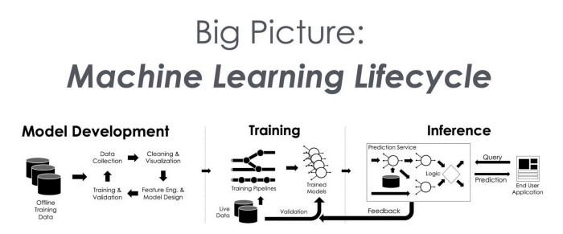
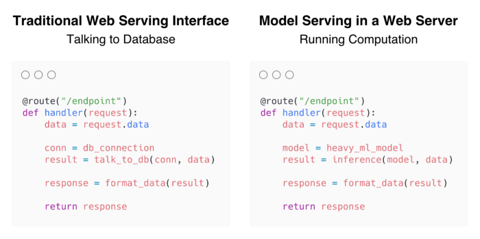
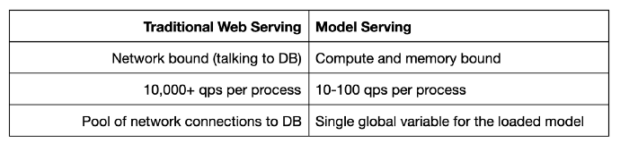
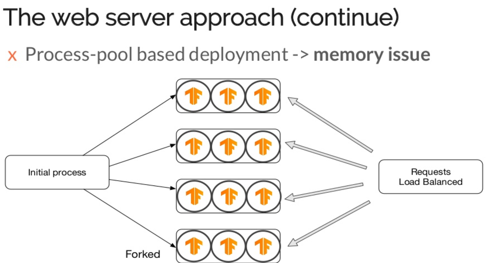
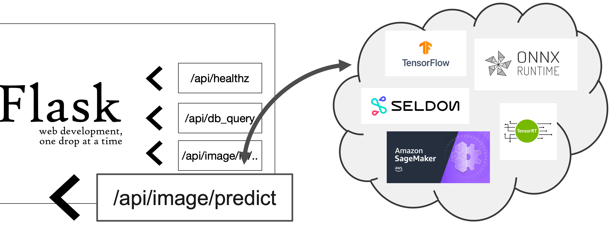
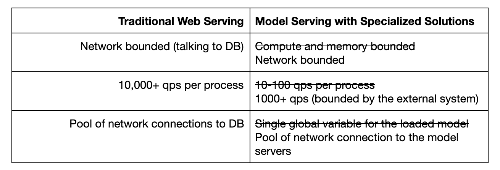
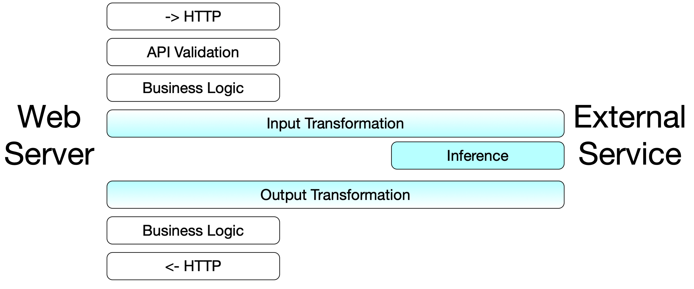

原文 Machine Learning Serving is Broken 是 Distributed Computing with Ray 专栏文章，聊了机器学习模型的 Serving 问题，记录一二。
设立好机器学习目标后，从模型角度，机器学习整体可分这么2个阶段：
- 模型的创建。模型训练 Training。包括训练数据准备，选择最好的模型（超参数调优）。
- 模型的使用。模型推理 Inference。也包括输入数据的准备。
模型被使用，才是机器学习落地的开始。

Wrap Your Model in Flask
机器学习模型一般使用 Python 开发，所以使用 Flask 是很自然就能想到的方案。
从 coding 角度，与传统的Web应用开发区别不大。把模型、数据库当做黑盒，开发只关心输入输出。

使用 Flask 进行 Serving，给了模型的开发者很大的便利，同样的 Python 技术栈，Flask 学习成本又低，从模型开发到模型API化可以一人搞定。不同的机器学习模型的格式差异（ScikitLearn与TensorFlow的模型格式就迥异）统一使用HTTP协议抹平。这是优点。
表面上是美好的。但是，机器学习 Serving 需要大内存加载模型，并且执行计算密集型任务。响应时间秒级，QPS 100+是常见的。下图比较的是单机与传统Web Serving的不同。

解决方法也是有的，因为Model Serving本身是无状态的，很容易进行水平扩展。
性能问题也能通过水平扩展来解决。目前为止，Flask 方案表现良好。
Flask的问题：因为 Model Serving 是计算密集型任务，提高 Flask 服务并发的手段只有多进程（规避 Python GIL 问题） ，使用 gunicorn。也就意味着，启动N个worker进程，Model 会加载N次，内存浪费问题很严重。参考：Ray Serve: A new scalable machine learning model serving library on Ray。

原文指出如果 Model 扩展到了数百个，那就是数百个 * N的微服务，没有专职运维团队，开发团队是处理不过来的。个人认为这个问题应该是业务发展的技术阵痛，而不是Flask的问题呀。
In the model serving scenario, each microservice only corresponds to one single model. A typical development team can manage tens of microservices but not hundreds of them without a large dedicated ops team.
The Rise of Specialized Systems
模型Serving专用系统的崛起。比如 TensorFlow Serving，不过只能用于 TensorFlow 模型。

将计算转移到专用系统后，Flask coding 的逻辑就跟 Web 开发真没两样了，瓶颈问题都转移到专用系统了。

比起 Flask 包装模型的做法，Flask 应用对接 Model Serving 专用系统，需要适配专用系统的输入输出。比如对接TensorFlow Serving，其输入是一个多维数组，需要把原始请求做转换，第一次就做对是挺难的。没法复用模型训练用的数据预处理逻辑。

模型开发者现在需要维护两个server：
- model server：部署模型的专用系统。
- web server：输入数据准备，调用model server（不同接口做不同的适配）。（其中输入数据准备，要到什么程度呢，是调用方把数据都准备好，还是模型开发者去调用一些特征数据服务。这些模糊地带，每个公司可能都不一样。）
架构中多引入一层 Model Server，模型开发者的工作内容也发生了变化。原文指出这会给模型开发者带来 cognitive load（认知压力），引入了新的工作流程，还不顺手的那种。
Additionally, by adopting model servers, data scientists now have two problems: managing the model servers, and managing a web server that handles all the business logic. Even though the model servers might be managed by an infrastructure team, the data scientists still need to think about the featurization in the web server and the model logic in the model servers. This is a lot of cognitive load for the data scientists.
也总结了一些Model Server的不足。TensorFlow Serving 只是 TensorFlow 模型的专用系统，不够通用。转化成统一的模型格式比如ONNX，可能会带来未知bug。
- Framework lock-in: Tensorflow Serving and TorchServe are specialized systems for each framework. Modern data science teams use the best tool at hand; this can mean a mix of XGBoost, scikit-learn, and deep learning frameworks. We need a system that can serve arbitrary python models.
- Vendor lock-in: AWS SageMaker and the other cloud providers offer hosted ML serving solutions that wrap your models and deploy them for you. In addition, these hosted solutions don’t have a unified API. We need vendor neutral solutions that avoid cloud vendor lock-in.
- Training & serving divergence: There are other solutions that take a trained model and convert it to another format for serving, like ONNX, PMML, and NVIDIA TensorRT. But we want to serve their models in the same framework that was used for training to avoid unknown bugs.
Ray Serve
总结前文中方案的不足。
- Wrap Your Model in Flask 模型太多不好维护（指的是开发团队自己维护）。希望部署、运维能简单。
- Specialized Systems 引入了新系统，不单单是原来那套顺手的Python脚本了，给模型开发者带来了额外的工作量。希望沿用老的技术栈。
两个希望就是 Ray Serve 的目标，遵从模型开发者的习惯，给模型开发者顺手的工具，衔接好训练和上线两个阶段，提高生产效率。
原文中的案例，iterating quickly without an ops team 说出了其精髓。
- A computer vision startup is using Ray Serve to serve deep learning based computer vision models. The teams of data scientists are iterating quickly without an ops team. Ray Serve helps them to quickly deploy and scale their predictions.
- The data science team at an E-commerce site is using Ray Serve to gain full control of the models from development to deployment. Ray Serve helps them gain visibility into the serving process as well as reducing costs by batching on GPUs. Additionally, machine learning models are typically not deployed individuality. Ray Serve enables them to easily compose models together.
The Simplest Way to Serve your NLP Model in Production with Pure Python 提到的 general-purpose ML serving infrastructure 的关键特质。
We’ve concluded that there are several key properties for general-purpose ML serving infrastructure:
- Framework Agnostic — Model serving frameworks must be able to serve TensorFlow, PyTorch, scikit-learn, or even arbitrary Python functions. Why? People use many different machine learning frameworks, and machine learning models are typically surrounded by lots of application logic. Limiting serving to a simple forward pass through a TensorFlow model is too restrictive. 支持各种框架，对框架没要求。
- Pure Python — Model serving should be intuitive for developers and dead simple to run. That means pure Python and no verbose configurations or yaml files. Developers use Python to develop their machine learning models, so they should also be able to use Python to deploy their machine learning applications. This is growing more critical as online learning applications combine training and serving in the same applications. 纯 Python 一把梭。
- Simple & Scalable — Model serving must be simple to scale out of the box across many machines along with simple ways of upgrading models over time. Achieving production uptime and performance requirements are essential for success. 非常容易可伸缩。
关于 Ray Serve 的介绍，可以参考这个 Silde，与本文观点类似：Ray Serve: A new scalable machine learning model serving library on Ray。
Last modified on 2020-08-06